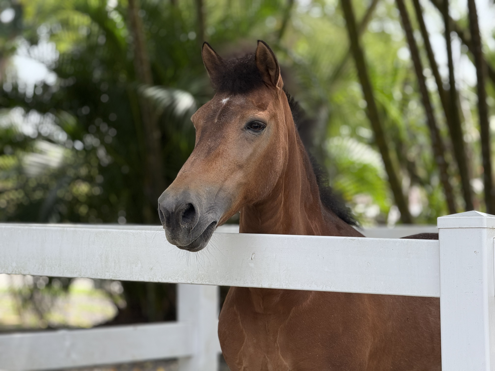
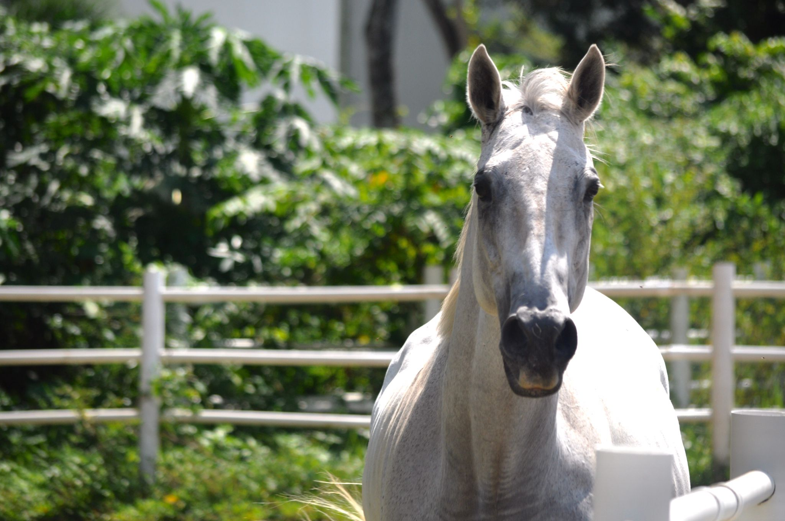

Individual adoption
Help fund your adopted horse's feed, daily care, grooming and safe retirement at Gallop.

Gallop Cares
Many of our horses are ex-racehorses who can no longer compete, but still have so much life, love, and purpose left to give. Through our lease and adoption programme, you are not just supporting a horse, you are giving them care, stability, and a meaningful second chance.
Enquire NowA retirement home with purpose
Gallop is building a safe retirement home for 20 horses that can no longer take part in riding activities. Adoption helps provide their feed, stable care, grooming and medical support while allowing each horse to remain known and loved.
We do not want their stories to be only sad. These horses have carried people, taught patience and given years of service. Adoption honours that life and helps create what comes next.

Benefits of adoption
Adoption is designed for horses who need a quieter life. You can build a genuine relationship through care, presence and regular visits.
Help fund your adopted horse's feed, daily care, grooming and safe retirement at Gallop.
Visit your horse, help groom them, offer approved feeding.
Receive 56 hours of horse-care training covering safe handling, grooming, feeding and daily care.
Immediate family members receive 20% off eligible riding lessons, riding activities and selected merchandise.
Adopted horses cannot be ridden. This boundary protects the rest and recovery they have earned.
Full adoption information
Adoption does not transfer legal ownership of the horse. Your monthly contribution supports the horse while Gallop remains responsible for their home, routine and welfare decisions.
Your monthly contribution supports feed, grooming, stable care, staffing and the daily needs of a retired horse. It allows you to form a personal connection without placing riding demands on a horse that has retired from ridden work.
Adoption is reserved for horses that need a non-ridden or retirement relationship. Adopters and their guests may not ride the horse, even if they have previous riding experience.
Subject to the horse's health and staff supervision, you may visit, groom and feed your horse, take photographs and spend quiet time getting to know their personality. These simple routines can become the heart of the relationship.
The registered adopter receives 56 hours of horse-care training. Immediate family members receive 20% off eligible riding lessons, riding activities and selected merchandise. Adoption does not include five free riding lessons, and the adopted horse cannot be ridden.
What you can do with your horse
Enjoy supervised hands-on care suited to your horse's health, comfort and daily routine. Staff may shorten or postpone the activity if the horse needs rest.
Offer only food approved by Gallop. You may take personal photographs as long as flash, equipment, noise and posing do not cause stress or interrupt stable operations.
No visits from 12:00 PM to 2:00 PM or from 7:00 PM onwards, when horses need uninterrupted rest.
Closed shoes, suitable stable clothing and any safety equipment requested by Gallop are required. Visitors who arrive improperly dressed may be unable to interact with the horse.
Adoption cannot be transferred, resold or used to run a business, paid experience, photoshoot service or promotion without Gallop's written approval.
Every interaction depends on the horse's condition and willingness that day. Welfare decisions made by Gallop staff take priority.
A mission, not a moment
Be part of their journey beyond the racetrack.
Enquire with us